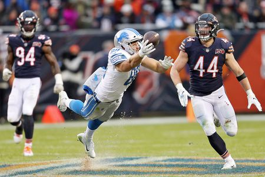
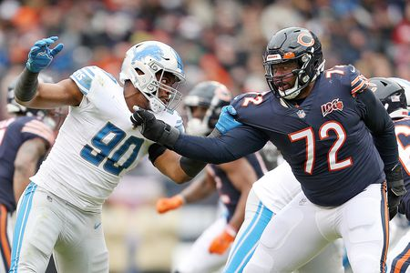

Another important rivalry is between the Chicago Bears and Detroit Lions. The Bears and Lions have faced each other at least one time in each season since 1930. There have been a few unique quirks in this series. While this rivalry is not as significant as Bears-Packers, it still has a place in NFL history. The first meeting between these two franchises came in October of 1930, when the Lions were known as the Portsmouth Spartans. Before moving to Detroit, the franchise was located in Portsmouth, Ohio. The Spartans won that first matchup by a 7-6 score. Regardless, the overall series has been dominated by the Chicago Bears. Their overall record against the Lions is 102-75-5.

Likely the largest contribution this rivalry has made to league history is the conception of a Thanksgiving game. Every Thanksgiving the NFL provides fans with three competitive football games, as that day serves as one of the league’s most viewed game days. When the Lions moved to Detroit, they decided to schedule an annual Thanksgiving Day contest to draw in fans. The 1934 Thanksgiving contest against the Chicago Bears proved to be successful, as a sold-out crowd in Detroit watched their Lions lose to Chicago 19-16. Since that 1934 matchup, Chicago and Detroit have faced off 17 more times on Thanksgiving, with Chicago holding a slight 10-8 series lead on this American holiday. Another freaky, yet sad consequence of this rivalry occurred in October of 1971. Lions’ wide receiver Chuck Hughes collapsed on the field and was rushed to the hospital. Sadly, Hughes did not make it, and remains the only NFL player to ever die on the field.